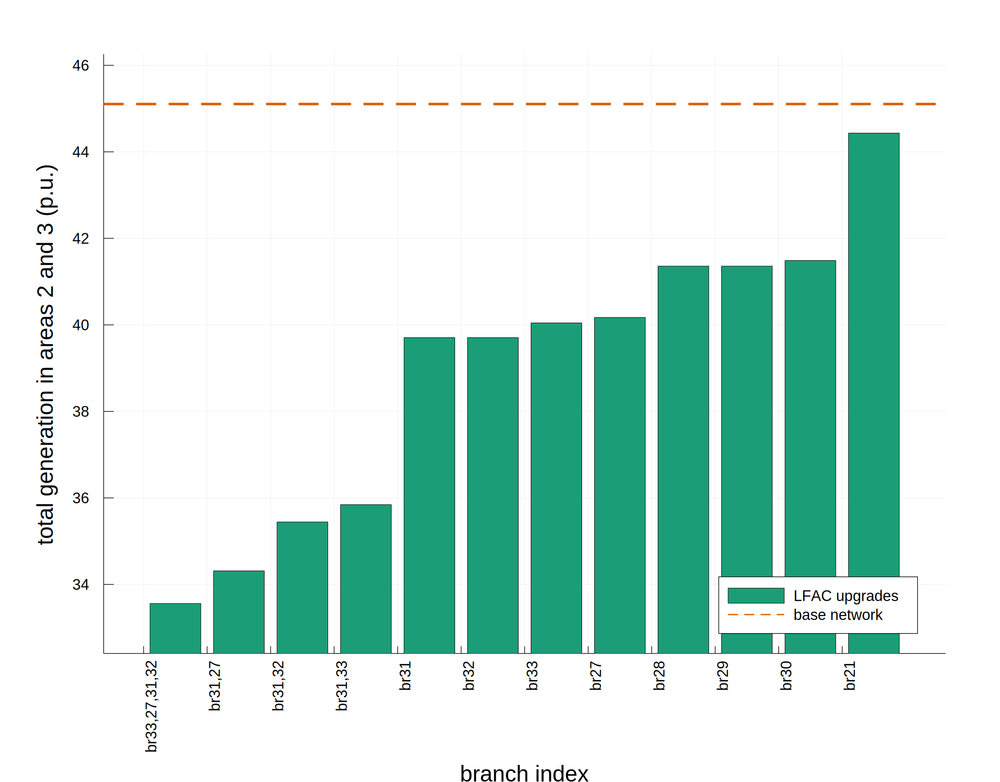

Solve the OPF for a set of upgrades
We want to define a set of upgrades in the Nordic system, each consisting of a single point-to-point upgrade. We use the function enumerate_branches to create the network data for each upgraded case. This generates a folder of network data for the single network file base_network with one line converted to LFAC, once for each index in indices, or if indices is empty, for every non-transformer branch in the network. Once we have created the data for each of these upgrades, we can call run_series to solve the OPF for each upgrade.
using VariableFrequencyOPF
original_network = "test/data/nordic_fault/base/fault_4032_4044.m"
# We choose to put the new network data in the same folder because
# we also want to use some data that is already there. Each upgrade
# gets its own folder.
new_data_directory = "test/data/nordic_fault/"
standard_frequency = 50.0
lfac_branch_upgrades = [21,27,28,29,30,31,32,33]
VariableFrequencyOPF.upgrade_branches(
original_network,
new_data_directory,
standard_frequency,
indices=lfac_branch_upgrades
)
# Minimize generation in areas 2 and 3 with plots including
# the power flow between areas 1 and 2
objective = "areagen"
gen_areas = [2,3]
area_transfer = [1,2]
# We want to plot the results of all branch upgrades,
# so we set `enum_branch` to true
enum_branches = true
solution = VariableFrequencyOPF.run_series(
new_data_directory,
objective;
gen_areas=gen_areas,
area_transfer=area_transfer,
enum_branches=enum_branches
)
results_dict = solution[1]
n_subnets = solution[2]
subnet_array = solution[3]
idx_sorted = solution[4]
series_output_folder = solution[5]
plot_best_x = solution[6]
println("Ran the OPF for all folders and saved the outputs in $series_output_folder.")
# Now we generate plots showing the results across all the upgrades.
# We could plot multiple series (e.g. with different operating conditions,
# converter parameters, etc.) on the same x axis by adding them
# to the following array. Here we only plot one.
results_dict_allplots = [results_dict]
plot_output_folder = "results/nordic_fault/"
series_labels = ["LFAC upgrades"]
VariableFrequencyOPF.plot_results_dicts_bar(
results_dict_allplots,
n_subnets,
subnet_array,
idx_sorted,
plot_output_folder,
plot_best_x,
series_labels,
color_palette=:Dark2_8
)The function run_series solves the OPF for each upgrade and generates results in .csv files. The next function, plot_results_dicts_bar, generates and saves plots of certain variables. For example, we can look at the plot of the objective value, total generation in areas 2 and 3 (p.u.): 